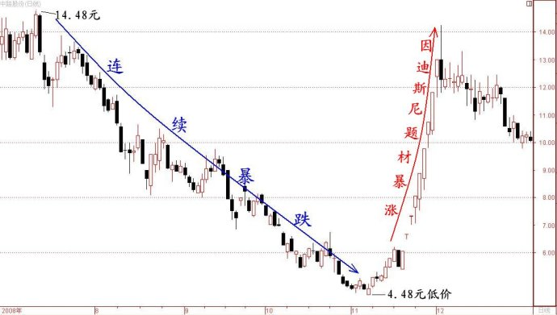

第211篇•教你炒股系列59:主升浪的形态（10）
谷为陵
我今天接着谈因超跌反弹形成的“大阳线涨停板”型主升浪。我们先回顾一下超跌反弹型主升浪的四个成因：一是纯粹的超跌反弹，二是有不确定的“公开性”利好，三是有隐含的“非公开性”利好题材，四是突发性的“利好”事件。我在前面谈完了前两个成因，现在我阐述一下第三个成因，即，有隐含的“非公开性”利好题材（简称“有隐含的利好题材”）型主升浪。
所谓“有隐含的利好题材”，是指由于政策或者行业方面出现的剧烈变化，使上市公司意外地获得了资产和权益等方面的大幅增值，形成了对公司的重大利好。这类隐含利好本来一直是上市公司基本面的一部分，原先并非算什么利好，但最终却变成了利好因素。如，因土地大幅增值而陡然出现大量隐蔽资产，因原材料价格大涨而使先前储备了大量原材料的公司大幅受益，因某家公司拟上市而使持有该公司大量股份的上市公司股权获得巨额增值，等等。
隐含利好的特点是，起初只被极少长期关注和研究该股基本面的“消息灵通”人士知晓，不为大众所知，但随着时间推移和股价上涨，越来越多的投资者打探到了或者从公开信息中挖掘出了其中的利好题材，于是，题材效应逐渐蔓延，而股价也不断上涨。要注意的是，隐含利好题材不属于内幕利好，内幕利好是原先根本不存在的、由控股股东人为制造的、从公开信息无法查到的、普通投资者事先永远不知道的利好，如，重大的资产注入、资产重组等信息，这些信息只有在上市公司公告后才能够被市场知晓。
“有隐含的利好题材”股票要启动主升浪，一定要具备三个条件：
一是上市公司隐含的题材要足够大，能够对股价造成重大影响。如，土地升值题材，上市公司拥有的土地越多，获得的升值受益越大，题材的力度也就越大。假若上市公司拥有的土地很少，即使土地有大幅升值，其可获的收益也是有限的，则其题材只能属于小的概念性题材，股价即使能够上涨，也难以形成主升浪。
二是要有重大的突发性事件作为引发剂，引爆隐含的利好题材。由于隐含的利好题材不属于上市公司需要强制公告的信息，所以，在通常情况下，这些题材对于股价也不会有任何影响，但是，一旦发生了某些能够足以让这些隐含的利好题材起作用的事件，那么，这些题材就会一改长期沉睡的状态，而会像巨人一样立即站立起来，将股价托举到天上。
三是股价要么超跌，要么低价，当然最好是“超跌+低价”。超跌就有反弹要求，而低价就具有投机价值，“超跌+低价”的股票若遇重大利好，哪怕只是重大概念性利好，股价也往往会启动一轮暴涨型主升浪。
我下面举几个案例。
案例1：土地升值利好——中路股份（600818）
在2008年11月，恰逢上证指数见大底反弹，而中路股份也在11月7日出现了第1个涨停板。由于当时低价股中出现一两个涨停板的股票很多，中路股份的这一个涨停板并不被市场瞩目。但是，在其后两天，该股却连续走出高开涨停板，就显得很不一般了。这时候，有关该股因浦东拟修建的迪斯尼乐园而致其500亩厂房将获巨额升值的传闻开始在市场上流传，最终导致该股连续走出9个涨停板。下面是该股的日K线图： 
中路股份能够走出如此强势的主升浪，主要基于三点：一是重大事件引发。迪斯尼乐园将在上海开建，这是一个全新的重大题材，具有巨大的想象空间，对于股价具有极强促涨作用。二是中路股份将有可能受益。中路股份厂房所在地距离迪斯尼地址很近，且该厂房面积约有500亩之大，一旦土地大幅升值，其总价值将十分巨大。三是中路股份投机性较强，股价弹性很大。该股属于典型的小盘超跌低价股，在朦胧利好刺激下，股价必将出现暴涨走势。
对于中路股份这样的股票，该怎样操作，确实是一个非常重要但又很难的问题。该股主升浪的前三个涨停板，应该说是“消息灵通”人士抢盘造成的。这些“消息灵通”人士至少掌握了两个重大信息：一是初步打探到了迪斯尼乐园将在上海浦东川沙镇开建，二是知道中路股份在川沙镇拥有占地面积巨大的厂房。当然，在当时还不能够完全确定迪斯尼乐园规划的具体情况，因为该信息还处于上海市政府高层密议的阶段，对外没有发布任何信息，客观地说，当时有关迪斯尼乐园建设的所有信息都是不确定的，是非常朦胧的。
现在的问题是，为什么在信息不确定的情况下，那些“消息灵通”人士就敢于大胆地对中路股份进行抢盘呢？这就涉及到股票的投机价值问题了。我认为，那些“消息灵通”认为中路股份的投机价值极高，他们对买入中路股份一定进行了如下收益与风险分析：
在收益分析方面，他们会认为买入该股收益应该很大。因为中路股份是一只小盘超跌低价股，其总股本只有两亿多股，且其股价在短短的4个月时间就从15元跌到了4元多，在大盘企稳后，中路股份本身具有很强的超跌反弹要求，该股一旦展开反弹，其股价很容易上涨到7～8元，若以4～5元买进，收益可观。在该股沾边迪斯尼乐园这样重大利好的情况下，即使该利好是概念性的，是不确切的，但毕竟是一个利好，这对于本身就具有反弹要求的低价股来说，其反弹一旦会被加注这样强劲的新动力，就更有可能引发一轮暴涨，买入该股的收益将会更高。
在风险分析方面，他们会认为买入该股风险应该很小，甚至没有风险。因为这毕竟是抄底，而非追高。虽然抄底该股属于投机操作，但这种投机并非是毫无缘由的盲目的、恶性的投机，这种投机失败的风险很小的。
在经过这样的收益与风险评估后，那些“消息灵通”人士就率先抢进去了。而当中路股份连续走出三个涨停板后，有关迪斯尼乐园与该股的利好传闻开始在市场流传，这吸引了众多的追涨盘和跟风盘，导致该股股价越涨越疯，最终竟然连涨9个涨停板。这样的暴涨走势也许是那些抄底的“消息灵通”人士始料未及的。但这还不是故事的全部，随着迪斯尼乐园这个题材的继续发酵，该股其后又走出了第二波主升浪，股价最终炒到了近20元，这是后话，暂且不表。
中路股份给我们什么启示呢？我认为，对于小盘超跌低价股而言，一旦出现重大利好的传闻，即使这些利好是朦胧的，也会引发股价的大反弹。所以，短线高手要对利好传闻和股价走势的关系极其敏感，要尽快搞清楚这些利好与相关股票的受益关系，尽快评估相关股票的投机价值，一旦发现某些股票具有很高的投机价值，就必须第一时间抢反弹，下手晚了就没有机会了。